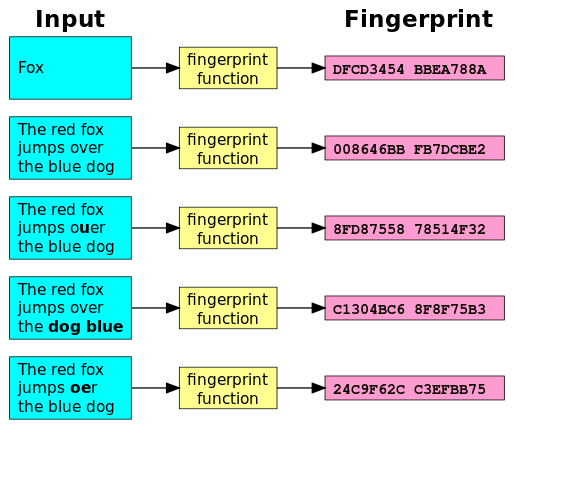
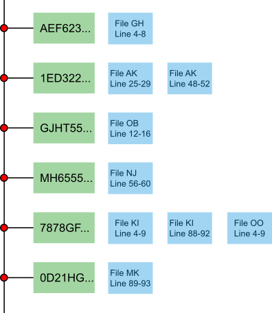

Sprint: A New Hope
Table of Contents
1 About This Sprint
In this sprint, we exploit the properties of a simple data structure to improve the clone detection algorithm.
2 User Stories covered in this Sprint
- As a developer I want to improve the efficiency of code clone detection
- As a manager I want to understand the complexity that arises when requiring the analysis of large amounts of data
3 Introduction
In the previous sprint in Section Clone detection 101, we introduced a straightforward detection algorithm. However, as you have probably experienced in the assignment, the current implementation has limitations. In this sprint we will address some of the limitations by transforming the analyzed data and by storing it in a way that makes clone detection more efficient.
3.1 Data transformation
As we have illustrated in the previous sprint, the clone detection algorithm creates “chunks” of each source file, compares their content and, if they are equal, expands them line by line to find the largest common set of equal lines of code, i.e. a clone. The problem with this approach is that the content of the analyzed files is kept in memory, i.e. the more files we want to analyze, the more memory is used.
A straightforward strategy to address this problem is to reduce the amount of data that needs to be maintained in memory (without storing it to disk). One approach to achieve this goal is to create a “fingerprint” of the data and compare those fingerprints instead of the actual data. We can generate fingerprints of the data with a hash function, i.e. a function that maps data of arbitrary size to data of fixed size [1]. The figure below illustrates the idea.

You can read more about hash functions here [2].
3.2 Hash functions and clone detection
In the previous sprint the clone detection algorithm compared each chunk with each other chunk to identify clones. This means that with each chunk we add to the set of size n, we increase the number of required comparisons by n. The table below illustrates how the number of comparisons increases with the number of chunks n.
| n | Comparisons |
|---|---|
| 2 | 1 |
| 3 | 3 |
| 4 | 6 |
| 5 | 10 |
| 6 | 15 |
| 7 | 21 |
| 8 | 28 |
| 9 | 36 |
| 10 | 45 |
| 11 | 55 |
| 12 | 66 |
More generally, n+1=(n*(n+1))/2. Hence, with n=10000, the number of comparisons is 50.005.000! Assuming we can keep all data in memory, the runtime of this algorithm is prohibitively slow.
While we could throw more computing power on the problem, we shall first try to rethink the clone detection algorithm. Remember that a hashing function produces with a unique input a unique output, i.e. a fingerprint. We can use this property to our advantage for clone detection: if two chunks produce the same fingerprint, we have identified a clone (assuming the hash function does not produce any collisions)! In practice, this means that we store chunks in a hash table. Each entry in the hash table contains the list of chunks with equal fingerprints. The figure below illustrates the idea.

Clones are identified by traversing the hash table and expanding those entries that contain more than one chunk, i.e. entries 1ED322 and 7878GF in the figure above. Therefore, with e.g. a number of chunks n=10000, the number of checks as to whether a chunk is a clone is 10000 (not 50.005.000 as with the previous algorithm).
3.3 Clone expansion
Since we are now storing chunks in a hash table instead of a list, we have to adapt the clone expansion algorithm from the previous sprint, Clone detection 101. When the chunks were stored in a list, we could simply traverse the list forwards and backwards to expand the clone. This is now not possible anymore since the hash table does not store the chunks in sequence. One solution to this problem is to store the chunks in two hash tables:
- By-hash table: stores chunks by their hash value in a list. With this table we detect clones.
- By-file table: stores chunks by their filename in a list. With this table we can lookup the chunks in a file and perform clone expansion.
With these two data structures it is possible to first identify clones and then to expand them.
4 Learning Material
5 Experiential Learning
The version of ClonyMcCloneface used in this sprint implements the ideas presented in the introduction. Your task is to complete some of the missing code, run the detector on different data sets and report on the observed results.
5.1 Setup your development environment
The same instructions as for the previous sprint apply.
5.2 Get ClonyMcCloneface
- Download the version for ClonyMcCloneface for this sprint.
$ wget ftp://custsrv1.bth.se/FTP/ClonyMcCloneface/A-New-Hope.tar.gz
- Unpack the archive (it contains an eclipse project file, so you can import it directly into eclipse).
5.3 First improvement: data transformation
Compare class NaiveDetector with the new class HashDetector. Note also the new package se.bth.serl.clony.transformers which contains the interface IContentTransformer and the two implementing classes Noop and Hash.
Your task is to complete the implementation of class Hash.
Checkpoint questions
- Compare the behavior of the
NaiveDetectorand theHashDetectoron both a small part of the Qualitas corpus and the complete Qualitas corpus. What are the differences? - What other content transformation would be helpful to implement (think of detecting different clone types)?
5.4 Second improvement: let hash tables do the hard work
Compare class HashDetector with the class FastHashDetector. Note that chunks are not stored anymore in class ListChunkCollection but in class HashChunkCollection.
Your task is to complete the implementation of class HashChunkCollection.
Checkpoint questions
- Compare the behavior of the
HashDetectorwith theFastHashDetectoron both a small part of the Qualitas corpus and the complete Qualitas corpus. What are the differences? - What are the bottlenecks in the current implementation of the clone detection algorithm and what are potential strategies to overvome these limitations?
5.5 Update Sprint Test Plan
Go through the user stories for this sprint and make sure you have a clear understanding of how to solve each of them.
Revisit and update your risks and contingencies section.
5.6 Update Course Backlog
Where do you go from here? Are there any questions that you want answered? Add them, along with a brief strategy for how to find an answer.
6 Sprint Acceptance Tests
You are done with this sprint when:
- You have answered all 4 checkpoint questions.
- You have implemented all missing code.
You may also have:
- Updated your Sprint Test Plan.
- Updated your Course Backlog.